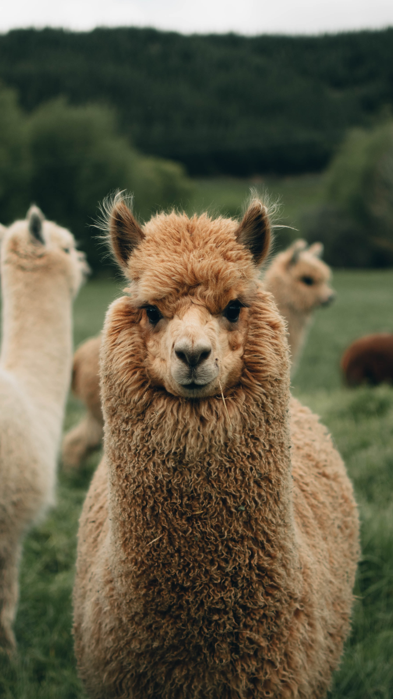

- New Zealand -
Spectacular Landscapes,
Maori Heritage,
Adventure

New Zealand is an island country located in the southwestern Pacific Ocean. It is situated to the southeast of Australia. New Zealand consists of two main landmasses: the North Island and the South Island, as well as numerous smaller islands.
You should visit New Zealand for its breathtaking and diverse natural beauty, from snow-capped mountains and fjords to pristine beaches and lush rainforests, making it a paradise for outdoor enthusiasts. Additionally, New Zealand offers a rich cultural experience, with a friendly population, Māori heritage, and a wide range of activities and adventures, making it an unforgettable destination for travelers.

Liked this guide? Find more:
Click Here